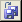
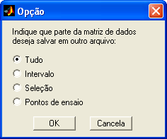
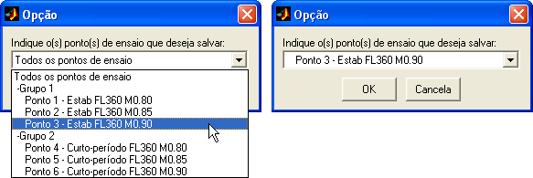
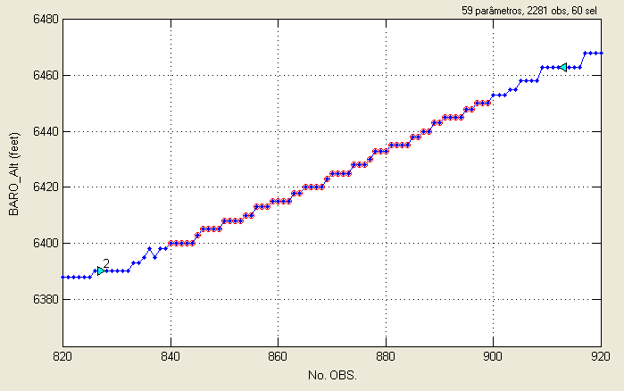

| Menu Arquivo |
  |
Salvar
Arquivo mat
Parcial
Além das
operações normais de salvamento de arquivo mat,
o R_DAT dispõe de operações para salvamento de parte
do arquivo corrente:
Clique em
“Arquivo ► Salvar trecho ...
► [intervalo desejado]” ou no botão 

A opção “Tudo”
chama a função “Salvar arquivo mat
como...”.
Salvar
Intervalo
Essa operação
salva o intervalo selecionado em um arquivo
mat. O intervalo selecionado é o trecho dos dados limitado pelas bordas
da tela
atual.
Clique em
“Arquivo ► Salvar trecho
... ► Intervalo” ou no botão na
Barra de Ferramentas e escolha a opção
“Intervalo”.
Localize um
arquivo mat ou indique um novo nome e clique
“Salvar”. Não é possível salvar arquivos mat compactados (zip).
Essa operação
salva os pontos selecionados em um arquivo
mat. Os pontos podem ser selecionados pelas funções de seleção/desseleção de pontos do menu
“Dados” e são indicados por círculos vermelhos no gráfico
principal.
Clique em
“Arquivo ► Salvar trecho
... ► Seleção” ou no botão na
Barra de Ferramentas e escolha a opção
“Seleção”.
Localize um arquivo mat ou indique um novo nome e clique “Salvar”. Não é possível salvar arquivos mat compactados (zip).
Salvar Pontos
de Ensaio
Essa operação
salva um grupo, todos ou apenas um dos intervalos
definidos como pontos de ensaios em um arquivo mat. Os pontos de ensaio
são
cadastrados no Editor
de
pontos de ensaio e são indicados por setas azuis no gráfico
principal.
Clique em
“Arquivo ► Salvar trecho
... ► Pontos de ensaio” ou no botão na
Barra de Ferramentas e escolha a opção
“Pontos de ensaio”.
O usuário
deverá indicar o grupo ou ponto a ser salvo.
Selecione a opção desejada na lista e clique ”OK”.

As seguintes opções podem ser escolhidas:
- Todos os pontos de ensaio: O usuário poderá optar por:
- Arquivo único: Os intervalos relevantes de todos os pontos serão unidos cronologicamente e salvos em um único arquivo;
- Arquivos separados: Cada ponto será salvo em um arquivo separado, num processo iterativo;
- Grupo de pontos: O usuário poderá optar por:
- Arquivo único: Os intervalos relevantes serão unidos cronologicamente e salvos em um único arquivo;
- Arquivos separados: Cada ponto será salvo em um arquivo separado, num processo iterativo;
- Ponto de ensaio: O intervalo do
ponto escolhido será salvo em arquivo.
Caso haja sobreposição de intervalos ao salvar vários pontos de ensaio num mesmo arquivo não háverá repetição de observações.
Para salvar, localize um arquivo mat ou indique um novo nome e clique “Salvar”. Não é possível salvar arquivos mat compactados (zip).
Exemplo
No exemplo
abaixo, a operação “salvar intervalo” salvará o
intervalo compreendido entre as observações 820 e 920 (inclusive), a
operação
“salvar seleção” salvará as 60 observações selecionadas (não há
necessidade de
serem contíguas), marcadas em vermelho, e a operação “salvar pontos e
ensaio”
salvará as observações compreendidas entre as setas azuis, caso seja
selecionado o ponto de ensaio número 2.
|
Nota: Caso o
intervalo de interesse esteja vazio, o R_DAT não realizará a respectiva
operação. |

As operações
não afetam as matrizes de trabalho atuais, que
continuarão carregadas no R_DAT.
O R_DAT salvará
o trecho relevante da matriz DADOS e a
matriz PARAM como variáveis em um arquivo mat segundo a formatação adotada
pelo IPEV:
| Variável: |
DADOS |
| Descrição: |
Matriz de dados
numéricos, em que cada linha representa uma observação e cada coluna
representa um parâmetro. |
| Formatação: |
Matriz numérica
n × m não vazia (n observações por m parâmetros). |
| |
|
| Variável: |
PARAM |
| Descrição: |
Matriz de texto
contendo os nomes dos parâmetros. |
| Formatação: |
Matriz de texto
contendo um nome de parâmetro por linha (completados com espaços para
armazenamento em forma de matriz). |
Serão salvas,
ainda, as variáveis reftime e testpts
e, caso
existam, as variáveis events, properties, setup
e scenario.
A numeração dos
pontos (parâmetro “No. OBS.”) será refeita
para representar a parte salva de forma correta.
Essas operações
não salvam os eventos e/ou pontos de ensaio
definidos pelo usuário. Essas informações são salvas apenas ao se
salvar todo o
arquivo.
| |
Salvar
arquivo mat |
Exportar
dados |
|